Série principal O primeiro jogo do Sonic, Sonic the Hedgehog, era um jogo de plataforma lançado em 1991 que apresentava o protagonista Sonic correndo pelos níveis do jogo para impedir os planos do Doutor Robotnik de dominar o mundo. O jogo se focava na habilidade de Sonic de correr e pular a altas velocidades com o uso de springs, slopes e loop-the-loops. Sua sequência, Sonic the Hedgehog 2, um jogo de plataforma de 1992, aumentou a variedade e a velocidade da jogabilidade da série e foi o segundo jogo mais vendido do Mega Drive de todos os tempos. O jogo introduziu o parceiro de Sonic, Miles "Tails" Prower, que seguia Sonic pelo jogo, e o movimento "spin dash", que permitia a Sonic ganhar propulsão rapidamente quando parado. A próxima sequência, Sonic the Hedgehog 3, foi lançado em 1994. O jogo introduziu um movimento de defesa temporária, adicionou novos tipos de escudo, e permitia que Tails voasse sendo controlado pelo jogador. O jogo também introduziu um novo personagem, Knuckles the Echidna, que serviu como um antagonista adicional ao lado do Doutor Robotnik. Sonic & Knuckles, lançado em 1994, introduziu Knuckles como um personagem jogável com habilidades de voo planado e escalada de parede. e permitiu aos jogadores conectar Sonic the Hedgehog 3 no topo do cartucho de Sonic and Knuckles. Isso permitia que se jogasse o jogo como ele foi desenvolvido originalmente; os jogos eram para ser um só, mas foram separados por problemas de espaço e tempo.
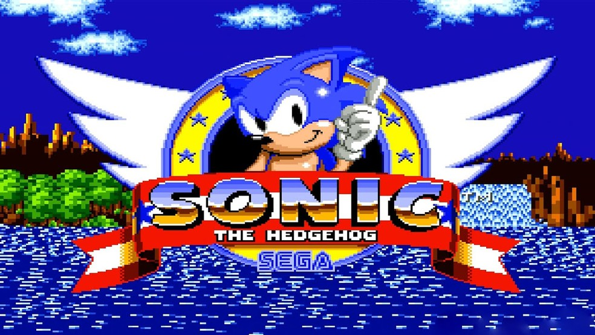Sonic 3D Blast, um jogo de plataforma de 2.5D isométrico lançado em 1996 apresenta Sonic correndo em ambientes pseudo-3D enquanto tenta resgatar Flickies do Doutor Robotnik.
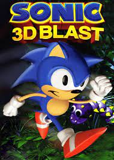Sonic CD, lançado para Mega-CD/Sega CD em 1993, introduz a personagem Amy Rose e possui níveis que se modificam dependendo se o Sonic está no passado, presente ou futuro.
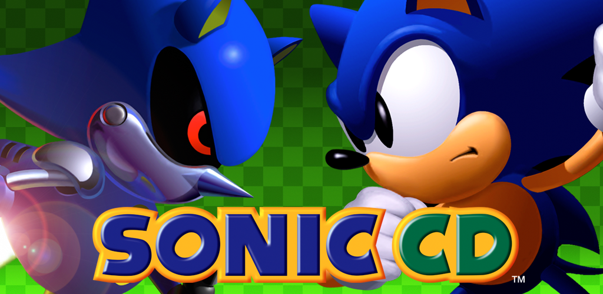Sonic Chaos, lançado em 1993 para Master System, apresentava Tails como um personagem jogável. A sequência, Sonic Triple Trouble, lançado em 1994 para Game Gear introduz um novo personagem, Nack the Weasel, que, assim como Knuckles e Doutor Robotnik, deseja coletar todas as Esmeraldas do Caos.
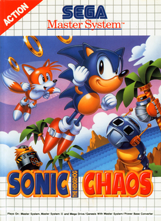Um dos últimos jogos para Game Gear, Sonic Blast, lançado em 1996 possuía sprites pré-renderizados.
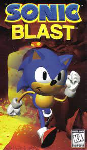Sonic Labyrinth, lançado para Game Gear em 1995, possuía uma visão isométrica e uma jogabilidade com uma exploração mais lenta como consequência do Robotnik ter trocado os sapatos de Sonic por "Speed Down Boots."
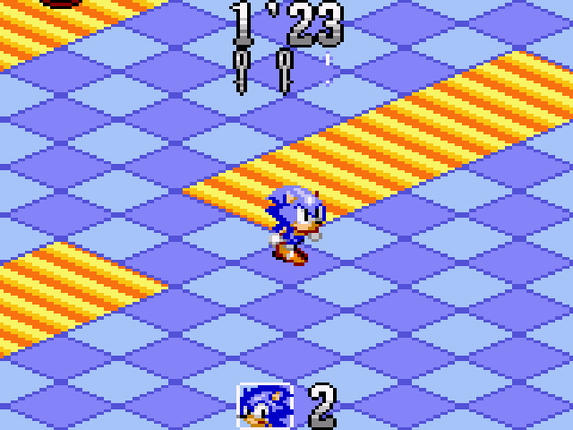Spin-off Muitos jogos do Sonic não são plataforma 42.[carece de fontes]
Spin-off de personagens Tails recebeu dois spin-offs para Master System. Tails' Skypatrol, lançado em 1995, permitia aos jogadores controlarem um Tails que voava o tempo todo. Tails Adventure, também de 1995, era um jogo de plataforma com elementos de RPG.
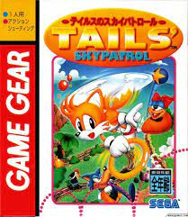
Knuckles' Chaotix, lançado em 1995 para Sega 32x, apresenta Knuckles e um novo grupo chamado Chaotix enfrentando Doutor Robotnik. O jogo apresentava um sistema de dois jogadores cooperativos em que os personagens eram conectados por anéis mágicos.
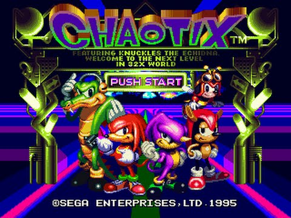Pinball Sonic the Hedgehog Spinball, lançado em 1993 nos jogos eletrônicos, é um simulador de pinball modelado com base nas zonas Spring Yard e Casino Night dos primeiros dois jogos de Sonic. O jogo, diferente dos simuladores de pinball em geral, tem como objetivo principal coletar todas as esmeraldas do caos em cada nível e derrotar os chefes do nível. Foi um dos poucos jogos a possuir elementos dos desenhos Sonic the Hedgehog and Adventures of Sonic the Hedgehog, apesar das referências serem apenas visuais.
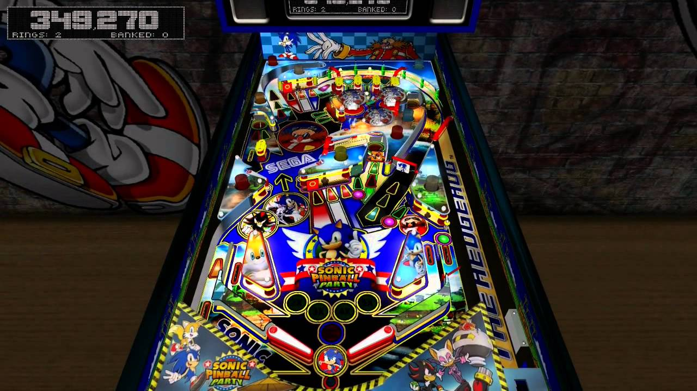Quebra-cabeça Dr. Robotnik's Mean Bean Machine é um jogo de quebra-cabeça similar a Puyo Puyo que se passa no universo de Adventures of Sonic the Hedgehog.[carece de fontes]
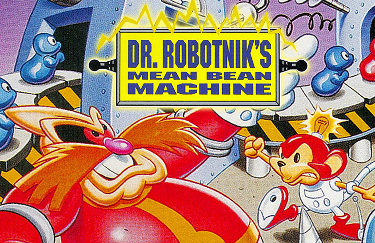Sonic Eraser, um jogo de quebra-cabeça lançado exclusivamente para Meganet, que requer o uso do modem do sistema.[carece de fontes]
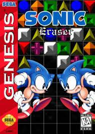Corrida Sonic Drift é um jogo de corrida de kart lançado em 1994. Recebeu uma sequência, Sonic Drift 2, lançada em 1995.
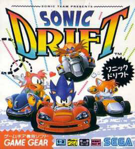Sonic R, um jogo de corrida a pé foi o primeiro jogo a ser totalmente em 3D, sendo lançado para Sega Saturn em 1997.
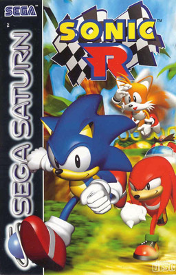SOBRE O PERSONAGEM
HISTÓRIA
JOGABILIDADE
JOGOS
CARACTERÍSTICA COMUNS
FEEDBACK